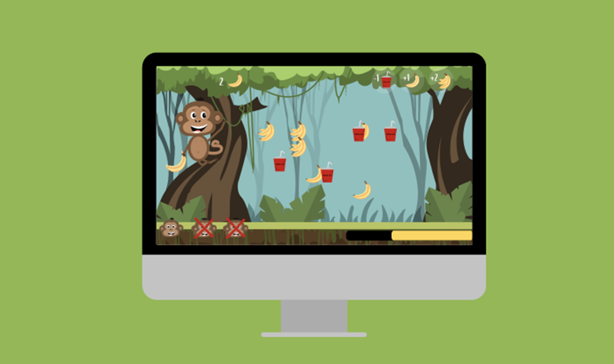
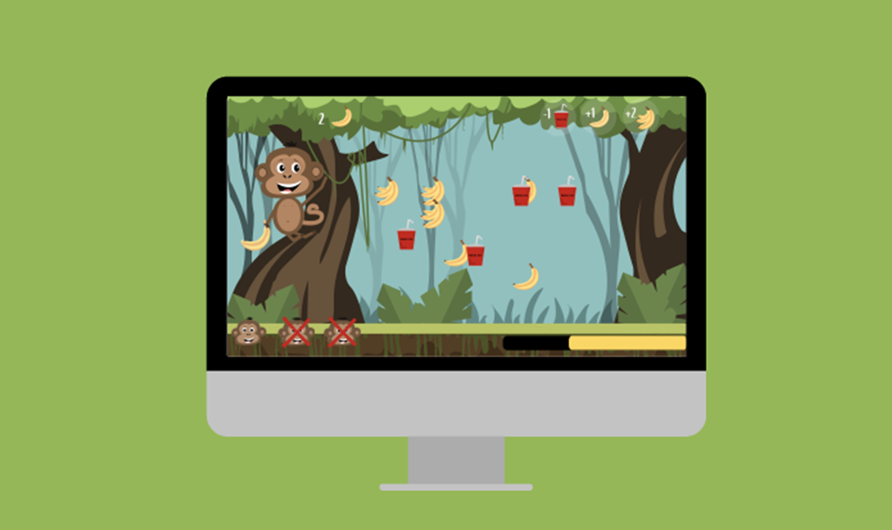

GRUNDLÆGGENDE ANIMATION
Dette var et 5 ugers langt forløb om grundlæggende animation. Denne animationsopgave var vores andet projekt indenfor animation, som var et gruppeprojekt. Vi skulle lave et interaktiv spil til Sex og Samfund der havde fokus på at skabe opmærksomhed om Privatsnak.com i form af vores tema som var ”billeddeling”. Vi skulle benytte os af HTML, CSS og JavaScript, samt designe vores design i Adobe Illustrator som SVG.
PRIVATSNAK - BILLEDDELING
Vores animationsspil ”Et billede i cyberspace” informerer mens det underholder unge i målgruppen 13-15 år. Spillet er baseret på et enkelt koncept om at klikke på ”del” og ”slet” elementer. Spillets formål er at formidle et budskab om at billeddeling af nøgenbilleder eller hævnporno blandt unge teenagere ikke er i orden, samt der er konsekvenser for både den der deler og sender billeder videre.
I denne opgave lærte vi hvordan vi i en gruppe kunne arbejde med idéprocessen. Det gjorde vi blandt andet ved at arbejde med storyboard, moodboard, persona og aktivitetsdiagram. Vi blev introduceret til Scrum og lærte hvordan vi kunne arbejde mest effektivt ved brug af Scrum-boards via trello.com. Deruover holdt vi en financering, hvor unge i alderen 13-15 år kom og prøvede vores spil.


HAPPY MONKEY
 
 Vores animationsspil ”Et billede i cyberspace” informerer mens det underholder unge i målgruppen 13-15 år. Spillet er baseret på et enkelt koncept om at klikke på ”del” og ”slet” elementer. Spillets formål er at formidle et budskab om at billeddeling af nøgenbilleder eller hævnporno blandt unge teenagere ikke er i orden, samt der er konsekvenser for både den der deler og sender billeder videre.
I denne opgave lærte vi hvordan vi i en gruppe kunne arbejde med idéprocessen. Det gjorde vi blandt andet ved at arbejde med storyboard, moodboard, persona og aktivitetsdiagram. Vi blev introduceret til Scrum og lærte hvordan vi kunne arbejde mest effektivt ved brug af Scrum-boards via trello.com. Deruover holdt vi en financering, hvor unge i alderen 13-15 år kom og prøvede vores spil.